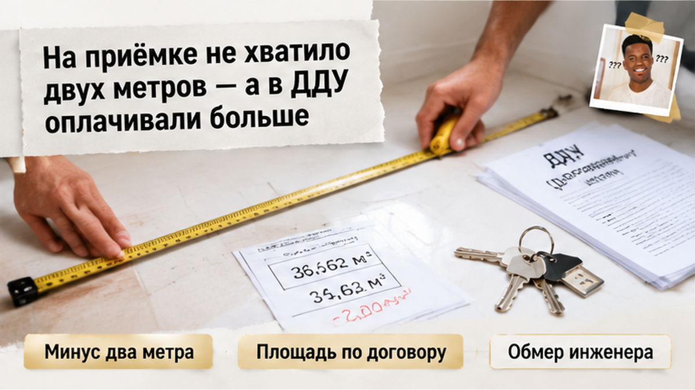
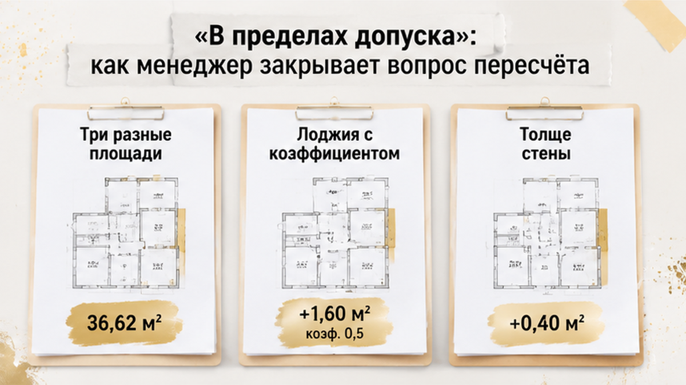
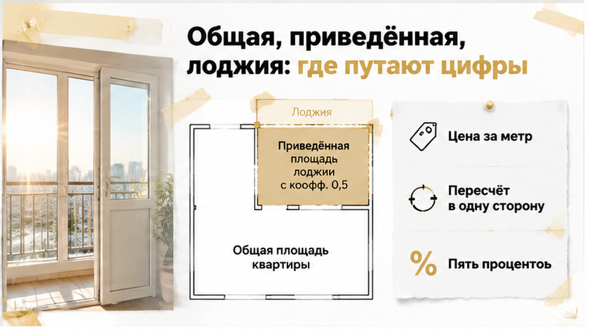

На приёмке в тюменской новостройке мужчина развернул рулетку и не досчитался двух квадратных метров: по договору он оплачивал одну площадь, а по факту комнаты вышли меньше. Менеджер посмотрел на замеры, кивнул и сказал, что это «в пределах допуска», цена в ДДУ твёрдая и пересчёту не подлежит. Разница в деньгах — шестизначная сумма, на которую в этой же квартире делают половину ремонта. Ключи лежали на столе рядом с актом: подпишешь — заберёшь сегодня, не подпишешь — следующая запись на приёмку через три недели. И человек стоял в пустой комнате с рулеткой в руке и решал, что дешевле: подписать сейчас и «потом разбираться» или уйти домой без ключей.
Расскажу изнутри, как эта сцена разворачивается на самом деле и где в ней теряются деньги.
Я Святослав Шакин, The Риэлтор, Тюмень. Разбираю приёмки новостроек до подписи акта — в Telegram и MAX.

Когда человек подписывает ДДУ, он покупает не квартиру, а обещание квартиры. Площадь в договоре — проектная: её взяли из чертежей, до того как строители залили стены, вывели штукатурку и сделали стяжку. Реальные метры появляются позже, когда дом достроен и кадастровый инженер обмеряет каждое помещение и делает технический план. Вот тут и выясняется, что коробка на чертеже и коробка в жизни — не близнецы.
В нашем случае разница ушла в минус. По договору — одна цифра, по обмеру — на два метра меньше. Причём человек не поверил на слово ни застройщику, ни себе: он взял рулетку, прошёл по комнатам, сверил с планировкой из приложения к ДДУ и получил ту же недостачу. Обычный покупатель на приёмке смотрит на обои, розетки и царапину на подоконнике. Профи в первую очередь открывает договор и сверяет площадь — потому что царапина стоит тысячу рублей, а метр в Тюмени стоит как хороший отпуск.
Дальше начинается арифметика, которую застройщик очень не любит проговаривать вслух. Если в договоре цена собрана как «стоимость одного квадратного метра, умноженная на площадь», значит, покупатель заплатил за конкретное количество метров. Метров меньше — значит, часть денег ушла за воздух, которого нет. Это не эмоция и не «хочу скидку», это простая математика по тексту, который обе стороны подписали.
Похожая история была у людей, которые оплатили по ДДУ кладовку, а на ключах помещения просто не оказалось: деньги внесены за объект, объекта нет. Тут логика та же, только «пропали» не квадраты кладовки, а квадраты внутри самой квартиры — и заметить их сложнее, потому что стены-то стоят.

«В пределах допуска» — это волшебная фраза, после которой большинство покупателей замолкают. Звучит как ссылка на закон, на ГОСТ, на что-то незыблемое. На деле это ссылка на пункт самого договора: почти в каждом ДДУ прописано, что отклонение фактической площади от проектной в пределах нескольких процентов не считается нарушением. Часто там же добавлено, что цена «является твёрдой и изменению не подлежит».
Вот на этом месте и надо остановиться и прочитать пункт целиком, а не пересказ менеджера. Потому что допуск и пересчёт — две разные вещи. Допуск отвечает на вопрос «застройщик нарушил договор или нет». Пересчёт отвечает на вопрос «за сколько метров человек заплатил и сколько получил». Договор может одновременно говорить: качество мы не нарушили — и — цена определена за квадратный метр, поэтому при расхождении площади стороны производят взаиморасчёт. Такие пункты в тюменских ДДУ встречаются регулярно, просто их не зачитывают вслух на приёмке.
Разговор в комнате шёл ровно по сценарию. «Все подписывают, вы первый спорите». «Пересчёт делает бухгалтерия, но по вашему договору его не будет». «Хотите — приезжайте через три недели, только квартира уже будет на гарантии, а не на приёмке». Последняя фраза — чистое давление на человека, который взял ипотеку и платит за съём.
Люди в такой момент подписывают не потому, что согласны. Подписывают, потому что устали, потому что жена в машине с ребёнком, потому что переезд назначен на субботу. Точно так же ломают дольщиков, которым перенесли ключи почти на год: сначала измотать сроками, потом получить любую нужную подпись. И вот здесь у нашего героя случился поворот, которого менеджер не ожидал.
Дальше начинается место, где человек обычно и проигрывает. Не в суде — за столом, когда ему показывают три бумаги, и в каждой площадь квартиры разная.
Расскажу изнутри, потому что вижу это на каждой второй приёмке. В договоре долевого участия стоит одна цифра. В акте обмеров — другая. В выписке из реестра, которая придёт позже, — третья. Люди смотрят на этот разнобой и решают, что их обманывают трижды. А на самом деле это три разные величины, которые просто называются похоже.
Проектная площадь в ДДУ — это то, что застройщик обязался построить. Часто она приведённая: к жилым метрам добавили лоджию с коэффициентом 0,5 или балкон с 0,3, если такой пункт прописан в договоре. Фактическая площадь — то, что намерил кадастровый инженер по готовым стенам. А общая площадь квартиры, которая уйдёт в реестр, лоджию вообще не учитывает.
Отсюда любимый приём на встрече: «У вас в выписке метраж один, в договоре другой — вы всё перепутали». Человек теряется и замолкает.
А сравнивать надо не выписку с договором. Сравнивать надо то, что в ДДУ названо предметом и оплачено, — с тем, что намерил инженер. По одной и той же методике. С теми же коэффициентами. Если в договоре лоджия считается с половинным коэффициентом, значит и в замерах она должна идти так же, а не «ну там же холодное помещение, мы его не берём».
Куда реально уходят метры? Стены вышли толще проектных. Вентшахта встала на пару сантиметров глубже. Появилась ниша под коммуникации, которой на планировке не было. Каждая мелочь сама по себе — ерунда. Сложились — и квартира стала меньше, чем та, за которую заплатили.
Похожая история — когда покупатель платит за помещение, которого потом не находит. Мы разбирали такой случай: в Тюмени оплатили кладовку по ДДУ, а на ключах помещения не было. Механика та же: в договоре цифра есть, в реальности — нет, а разговор начинается только после подписи.

Поэтому в договоре я всегда ищу два пункта, и оба до сделки, а не после.
Первый — из чего складывается цена. Если написано, что цена равна стоимости квадратного метра, умноженной на площадь, значит метр имеет цену, и недостача метра имеет цену тоже. Если цена стоит фиксированной суммой без привязки к метру — разговор о возврате будет тяжелее.
Второй — пункт о перерасчёте. И тут внимательно: он часто работает в одну сторону. Метров стало больше — доплатите. Метров стало меньше — «в пределах допустимого отклонения, стороны претензий не имеют». Люди подписывают это, не читая, а потом удивляются на приёмке.
И ещё одна путаница, на которой держится половина отказов. Пятипроцентное отклонение из закона о долевом строительстве — это порог, при котором дольщик может вообще отказаться от договора и забрать деньги целиком. Это не про то, что всё, что меньше пяти процентов, дарится застройщику. Меньше — просто не расторгнешь. Но заплаченное за несуществующие метры остаётся заплаченным зря.
Такие разборы — по свежим следам. Пишите в Telegram или MAX — короче, чем здесь, и по конкретному корпусу.
Теперь то, ради чего всё это писалось. Момент, когда всё решается за минуту.
Сценарий на приёмке всегда один. Человек говорит про метраж. Ему отвечают спокойно, почти по-дружески: «Впишите замечание в акт, ключи забирайте, а по деньгам с вами свяжется отдел». Он вписывает: «с площадью не согласен». Ставит подпись. Получает ключи. Едет домой уже как хозяин.
Через месяц приходит ответ. Перерасчёт договором не предусмотрен, отклонение в пределах допустимого, акт подписан без претензий по объекту. И вот здесь запись в акте вдруг перестаёт работать.
Потому что фраза «не согласен» — это не требование. Это настроение. В ней нет суммы, нет расчёта, нет срока, нет ссылки на пункт договора и нет реквизитов, куда возвращать. Юрист застройщика читает её ровно так: человек недоволен, но ничего не потребовал.
Обычный покупатель после отказа ждёт. Пишет в чат дома, звонит в отдел, ему обещают «поднять вопрос». Проходит полгода, запал гаснет, деньги остаются там же, где были.
Тот, кто делал это не первый раз, действует иначе и сразу. Пишет отдельное требование — не в акте, а на бумаге. Указывает площадь по договору, площадь по обмерам, разницу, цену метра из договора и итоговую сумму. Ссылается на конкретный пункт ДДУ. Ставит срок ответа. Отправляет на юридический адрес заказным с описью, а не сообщением менеджеру в мессенджер. И только после письменного отказа идёт дальше — там уже другие правила и другие сроки.
Разница между этими двумя людьми — не в знании закона. В том, что второй превратил недовольство в документ с цифрой.
Про давление в момент подписания я писал отдельно, когда ключи от новостройки в Тюмени перенесли на год, а деньги на эскроу заморозили. Там люди подписывали что угодно, лишь бы наконец получить квартиру. Здесь то же самое: ключи в руках у застройщика, и это сильный аргумент без единого слова.
Ключи никуда не денутся. Их обязаны передать по договору, а не в обмен на отказ от претензий. Никто не имеет права держать вас в пустой квартире и говорить: подпишете без замечаний — заедете сегодня, будете спорить — приходите через неделю. Пришли через неделю — и приходите. Неделя дешевле недостающих метров.
Вы сверяете площадь квартиры с ДДУ до подписания акта или доверяете цифрам застройщика?
Приёмка в голове покупателя — это про обои, окна и царапину на подоконнике. А деньги теряются не там. Деньги теряются в трёх цифрах, которые надо просто положить рядом: площадь в договоре, площадь в обмерах и площадь в акте, который вам суют на подпись. Пять минут работы — и вы уже знаете, о чём говорить с менеджером.
| Что смотреть | Где искать | Что должно совпасть |
|---|---|---|
| Площадь квартиры | Пункт ДДУ с общей площадью плюс приложение с планировкой | Цифра в договоре, в обмерах и в акте — одна и та же |
| Кто мерил | Технический план, подготовленный кадастровым инженером | Есть документ, дата, исполнитель — а не «наш замерщик сказал» |
| Допустимое отклонение | Пункт про изменение площади и перерасчёт цены | Порог работает в две стороны: и когда метров больше, и когда меньше |
| Цена метра для возврата | Цена из вашего ДДУ, а не «рыночная на сегодня» | Возврат = недостающие метры × та цена, по которой вы платили |
| Балкон и лоджия | Пункт про понижающие коэффициенты | Понятно, входят ли они в оплаченную площадь и как посчитаны |
| Формулировка акта | Строка «претензий по площади не имею» | Либо её нет, либо рядом ваша оговорка о перерасчёте |
Обычный дольщик приходит на приёмку с фонариком и рулеткой — мерить, ровные ли стены. Я прихожу с распечатанным ДДУ и приложением к нему. Потому что стену переклеят и без суда, а метры после подписи акта возвращаются уже только через юриста.
Теперь про то, на что застройщики опираются, когда говорят «это в пределах нормы». В договорах долевого участия почти всегда есть коридор: площадь по факту может отличаться от проектной, и небольшое расхождение сторонами заранее принимается. Сам по себе такой пункт не жульничество — обмеры готового дома действительно не сходятся с проектом до сантиметра.
Вопрос в другом: что стоит в этом пункте про деньги. Бывает написано, что при отклонении в любую сторону цена пересчитывается. Бывает — что пересчёт делают только если вы получили метров больше, и тогда доплачиваете вы. А про недостачу — тишина. Это и есть тот момент, когда «норма» заканчивается, а начинается перекос в одну сторону.
Отдельная планка — в законе о долевом строительстве. Если общая площадь изменилась больше чем на пять процентов от той, что записана в договоре, это уже существенное отклонение, и дольщик может через суд требовать расторжения договора и возврата денег. Ниже этой планки история решается либо пунктом вашего ДДУ, либо переговорами.
Поэтому первое, что я спрашиваю у застройщика: «Покажите технический план и расчёт». Не письмо менеджера, не строчку в акте, а документ кадастрового инженера и цифры, из которых собралась итоговая площадь — с балконом, с коэффициентом, с обмерами по каждой комнате. Если расчёт дают на бумаге — можно спорить по существу. Если отвечают «у нас так посчитано, подписывайте, ключи выдаём только после акта» — это уже разговор не про метры, а про давление.
И площадь — не единственное место, где бумага расходится с обещанием. По той же логике теряются оплаченные по ДДУ кладовки, которых на ключах не оказалось. Так же спокойно меняется юрлицо застройщика, а дольщикам присылают новый ДДУ. И по такой же схеме срок ключей уезжает на год, пока деньги лежат на эскроу. Общее у всех историй одно: человек читал рекламный буклет, а подписывал договор.
Хорошая новость в том, что самое дешёвое действие здесь стоит ноль рублей. Вечером перед приёмкой открыть ДДУ, выписать на листок площадь и пункт про отклонение. На приёмке — попросить техплан и расчёт до того, как в руках окажется ручка. Если цифры не сходятся, акт можно не подписывать в этот же день: приёмка не последний поезд, а этап, который переносится.
Люди возвращают свои метры именно так — не криком в холле, а спокойной фразой «дайте письменный расчёт, я подпишу после сверки». Я на приёмках эту фразу произношу вместо клиента, и разговор сразу меняет тон: там, где дольщику говорили «норма», мне уже несут технический план. Разбирать площадь лучше до акта, а договор — до брони, пока подпись ещё ваша.